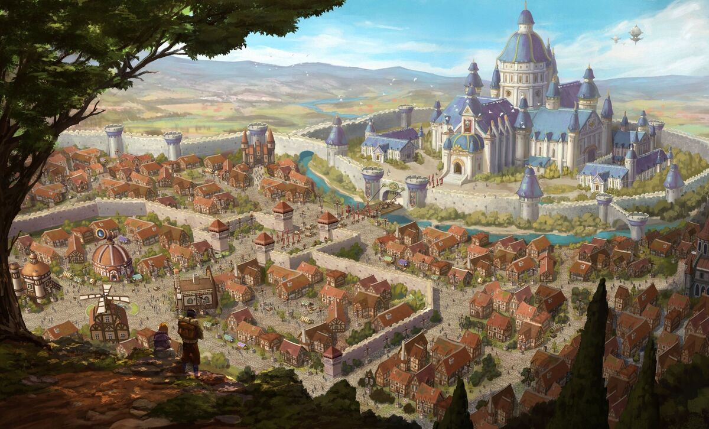
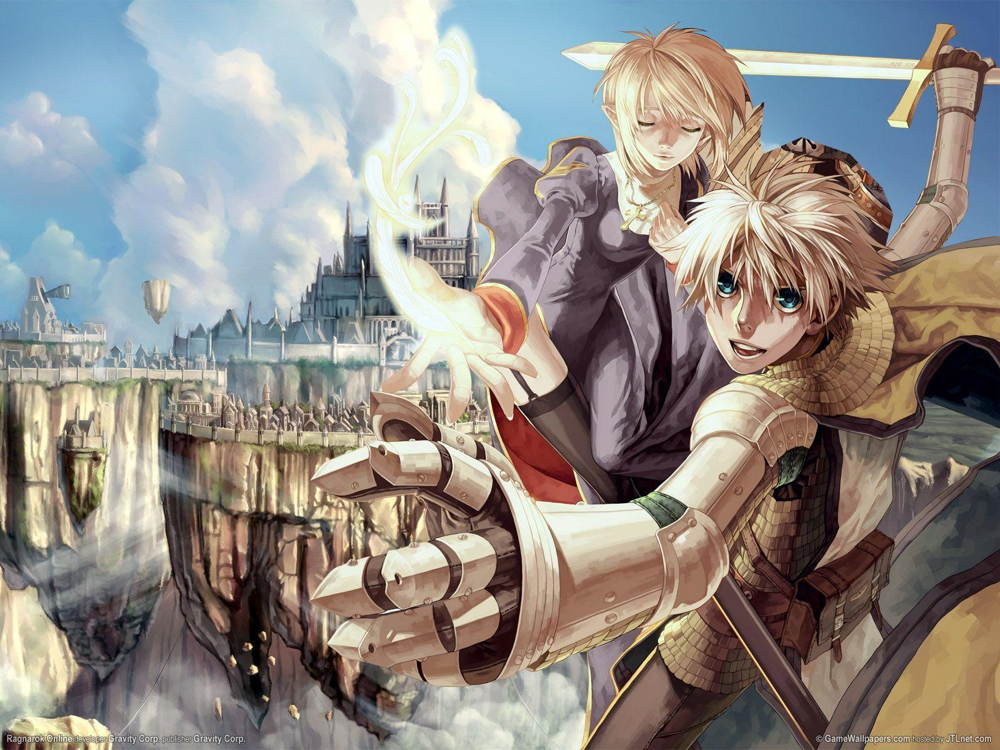
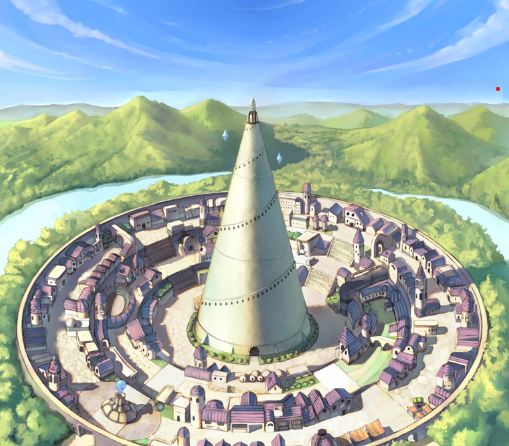
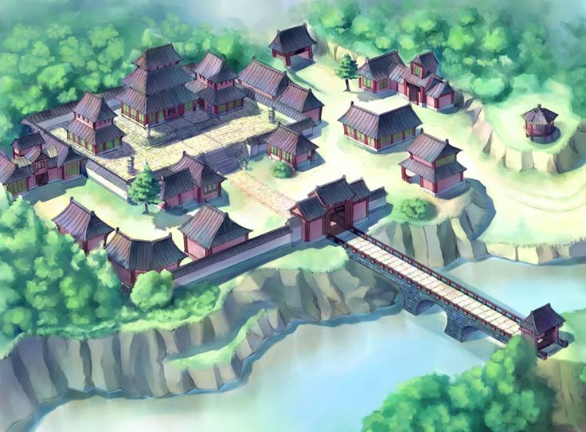
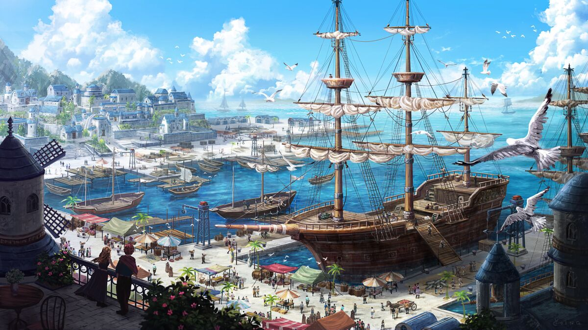
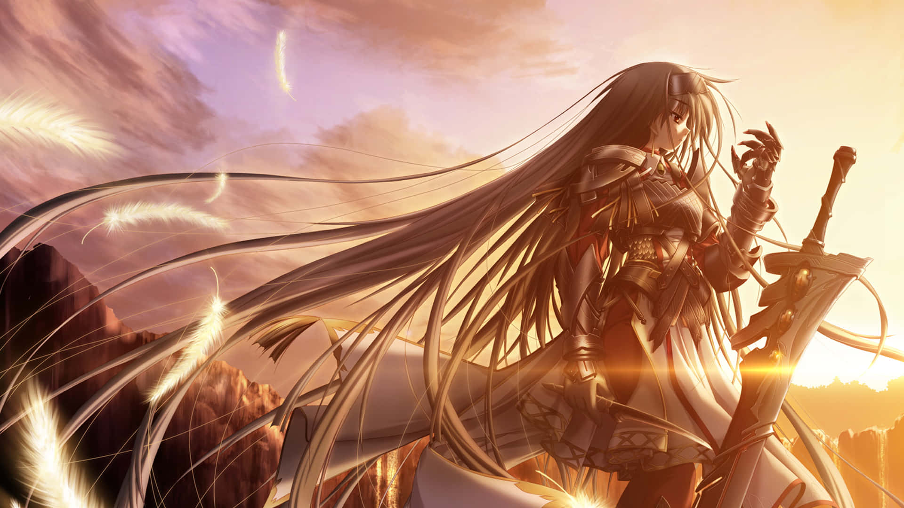
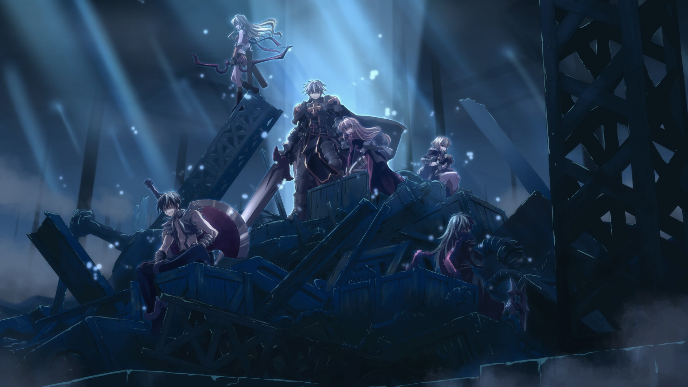
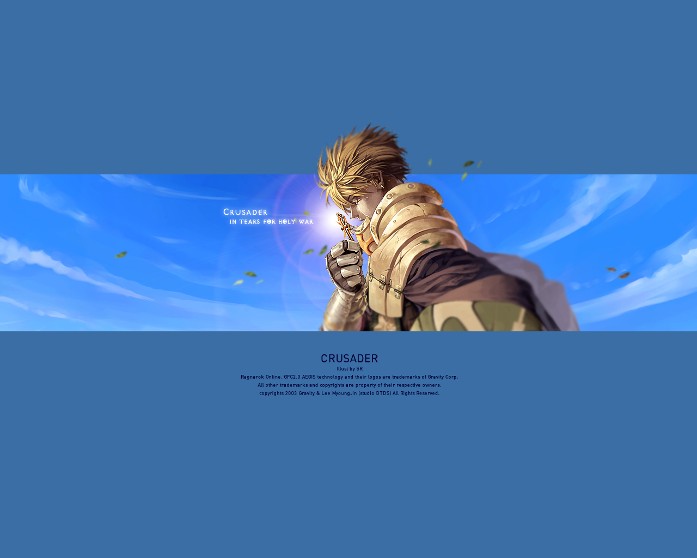
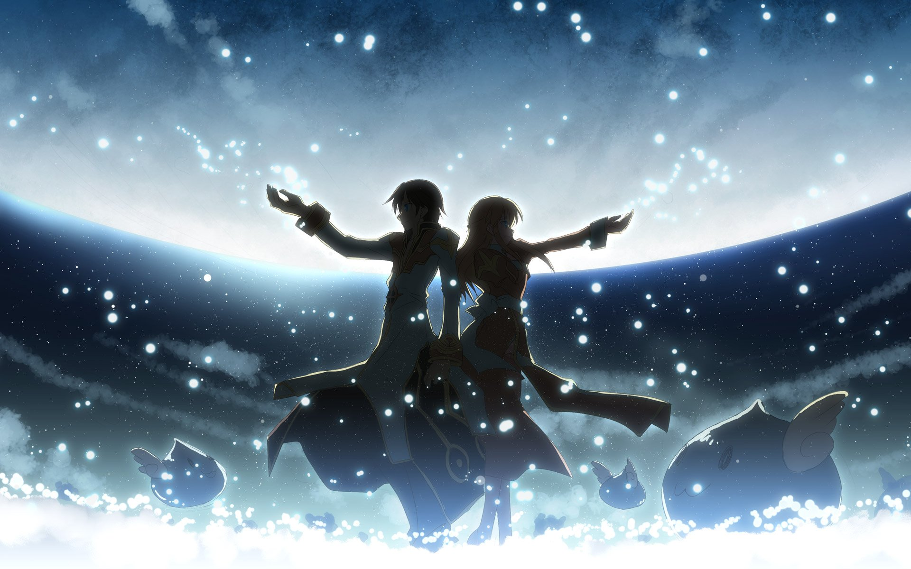

Prontera
Capital de Rune-Midgard, Prontera é o coração do reino e o ponto de encontro de aventureiros de todas as partes. Sua grandiosidade e importância fazem dela uma das cidades mais icônicas do jogo.

Em Rune-Midgard, um mundo repleto de magia e mistérios, aventureiros partem em jornadas em busca de poder, conhecimento e glória. Entre cidades lendárias, florestas perigosas e ruínas antigas, cada passo revela novos desafios e segredos esquecidos pelo tempo, enquanto diferentes classes seguem seus caminhos, enfrentando inimigos, dominando habilidades e construindo suas próprias histórias em um universo vivo e cheio de possibilidades.
Rune-Midgard é um continente repleto de cidades marcantes, cada uma com sua própria identidade, cultura e papel na jornada dos aventureiros. De capitais imponentes a portos movimentados, o mundo de Ragnarok convida os jogadores a explorar, evoluir e descobrir novos caminhos.

Capital de Rune-Midgard, Prontera é o coração do reino e o ponto de encontro de aventureiros de todas as partes. Sua grandiosidade e importância fazem dela uma das cidades mais icônicas do jogo.

Envolta em mistério e magia, Geffen é conhecida por sua famosa torre e por atrair estudiosos do poder arcano. Seu clima sombrio e místico a torna fascinante para qualquer viajante.

Cercada por natureza e tradição, Payon carrega uma forte influência oriental. É famosa por seus arqueiros, por suas florestas densas e por suas lendas cheias de mistério.

Porto vibrante e centro comercial, Alberta representa o espírito dos mercadores e viajantes. É uma cidade viva, ligada ao comércio, ao mar e às oportunidades para quem deseja prosperar.



